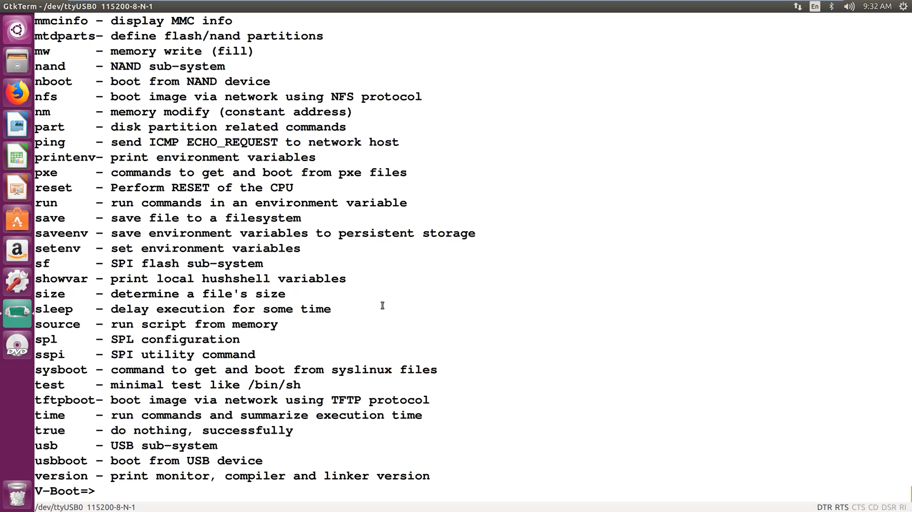
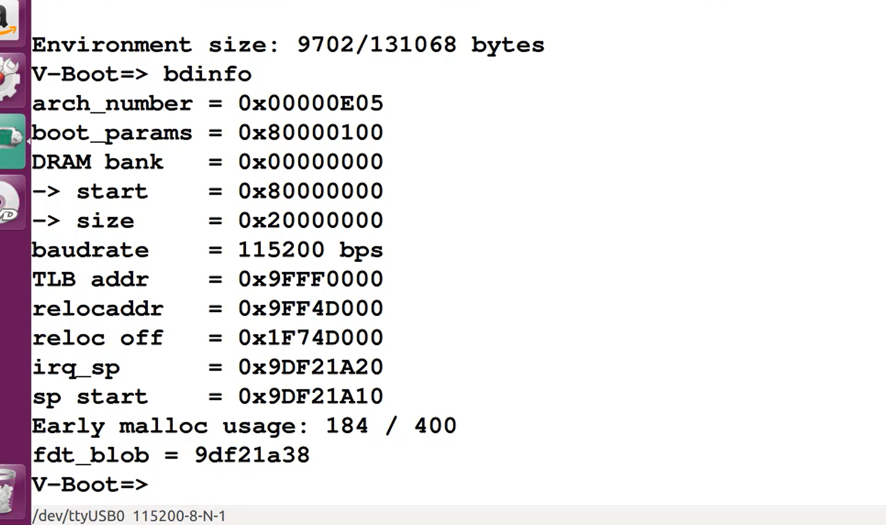
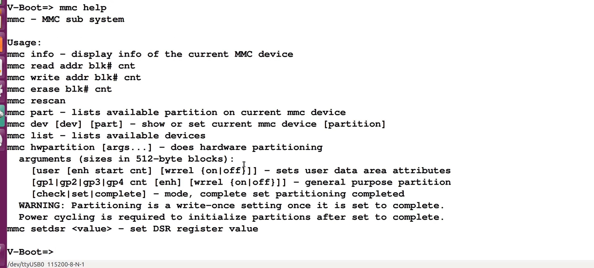
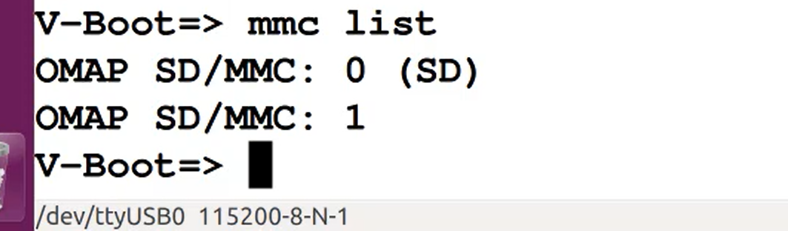
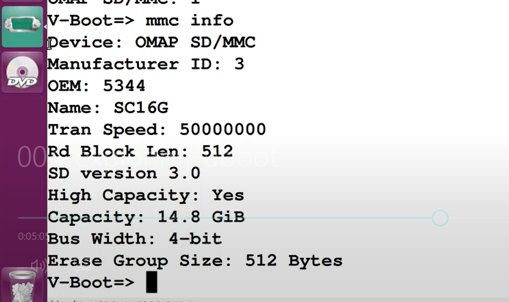
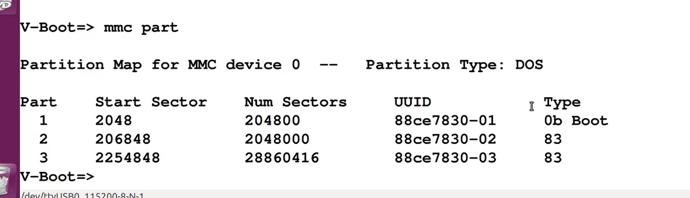
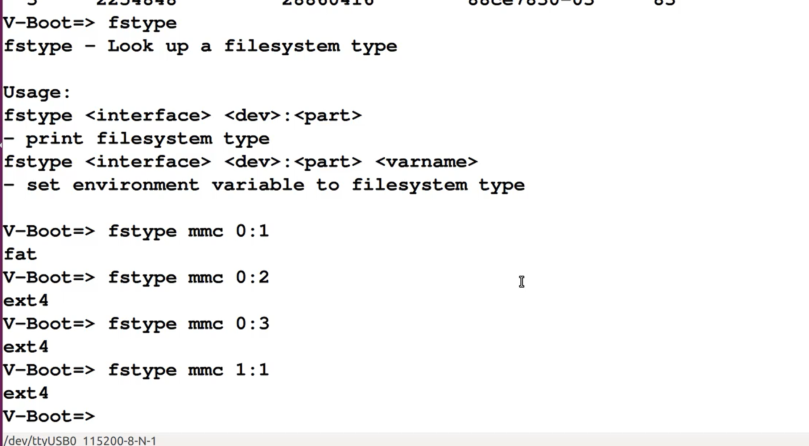
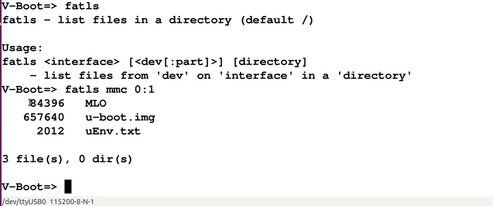

iot rootkit 学习(week 1-3)
一周的学习马上就要结束啦~
大概看了下这个视频讲的东西
都是关于深入了解U-Boot的
具体讲的都是里面的指令啊啥的
Sart your engine
?

首先输入
这个命令是用来查看U-Boot有哪些命令并可以查看U-Boot命令的大概意思
printenv

这个命令呢
打印出来了一大堆东西，但基本都是关于环境变量的
还有很多U-Boot有的基本信息
//作者还说以后攻击者可以利用这些东西
//好兴奋啊
bdinfo

bdinfo么就是board information
主要就是一些东西的地址
其中有些东西对攻击者很有用
mmc help

和上面’?’类似
只不过是给出了mmc命令
mmc也就是多媒体存储卡//可以理解为类似sd卡的东西
//其实也就是sd卡的前生
通过mmc help可以看到很多mmc的命令
比如mmc rescan重新扫描mmc设备啥的
mmc list

也就是列出来mmc设备
这边可以看到有俩个mmc设备
一个是我们插入的sd卡，也就是第一个
还有一个是BBB内部的自带mmc
mmc info

输入这个命令呢是告诉我们
当前选中的mmc设备的信息
也就是我们插入的sd卡
ok
接下去来看看怎么查看其他的设备
也就是内部的mmc
mmc dev
不上图了
这个命令就是告诉你哪个mmc设备是当前的设备
那怎么把内部的mmc设置为当前的设备呢
我们只需要敲入
mmc dev 1
mmc dev []
[]里面是设备的标号
具体标号可以用mmc list查看
这个命令把内部的mmc设置成了当前设备
接着就可以敲入mmc info查看信息了
接下去再把mmc切回sd卡
继续学习。。。
mmc part

这个命令展示的是当前mmc设备上的分区
//不怎么确定part是不是分区的意思
fstype

file system type
使用方法呢就是
fstype mmc []:[]
俩个里面都是标号
第一个是mmc标号
第二个是mmc里面分区的标号
接下去作者就开始讲关于里面分区的命令了
比如说fat
输入fat可以出现很多关于fat的命令
fatinfo
用法fatinfo [] []:[]
第一个里面填写设备比如说mmc
第二个是设备编号
第三个是设备中分区编号
fatls

不用多说
这边讲讲用法
其实和上面的fatinfo是一模一样的
比如说
fatls mmc 0:1
这边列出来的其实就是我们往sd卡中
fat32部分放的东西
然后作者说了还有很多用法比如说fatload啊什么的
还说给我们布置个小练习让我们自己去了解
//说白了太懒了不想一个一个在视频里讲解
//我自己看的都发困了
ext4ls
用法同上
可以列出来选定部分放的文件啥的
ls
用法
ls [] []:[]
比如 ls mmc 0:1
然后发现结果其实和刚刚那个
fatls mmc 0:1
是一样一样的
//黑人问号.jpg
//这么好的东西居然放到最后讲
Conclusion
这个视频呢主要还是要教我们怎么和U-Boot交互
还有一些U-Boot的命令啊
啥的
这边也提了好像是说加载到U-Boot里的Bootkit
有和U-Boot一样的功能啊来监视这些东西
即使操作系统加载后
也可以这样
ok
学习结束